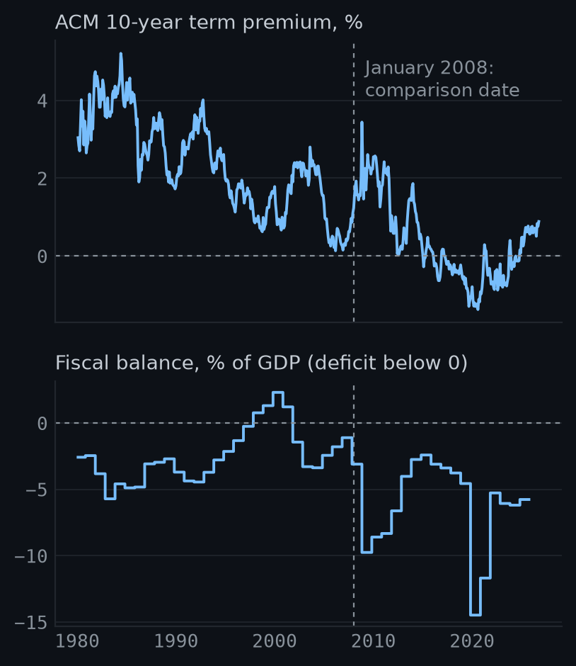
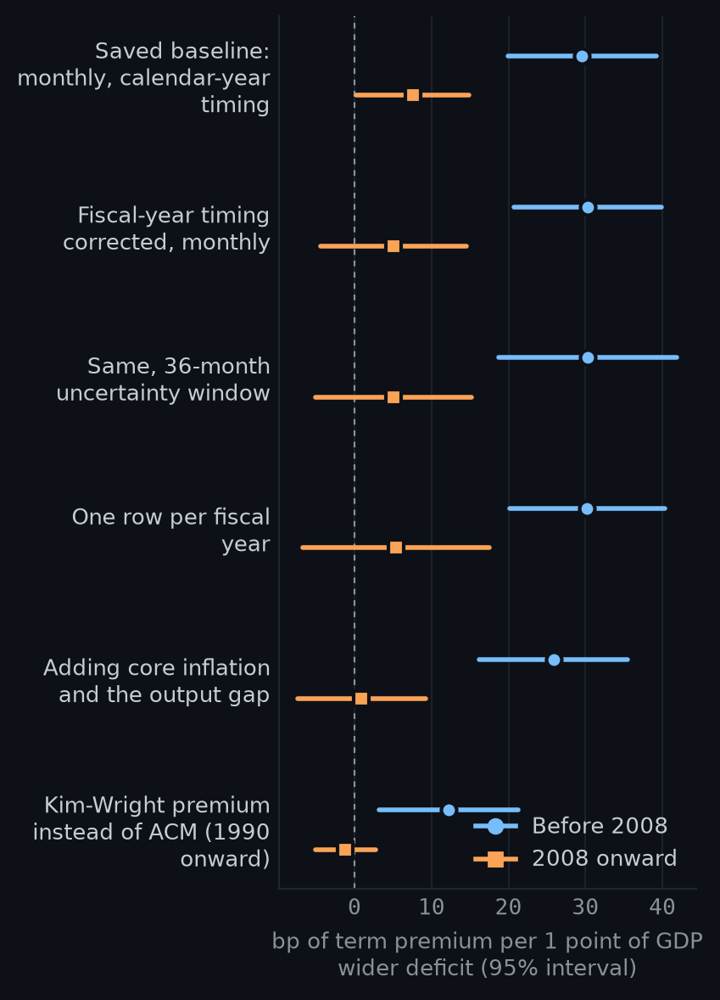
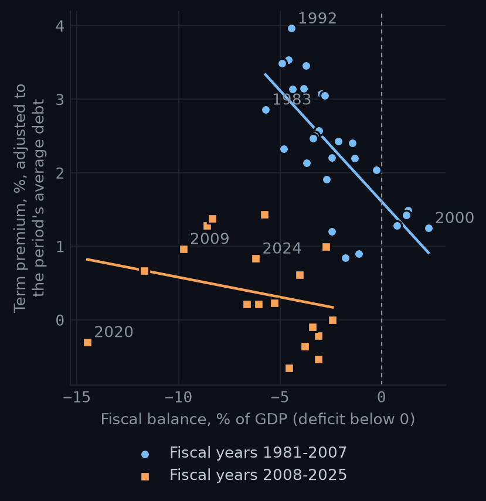
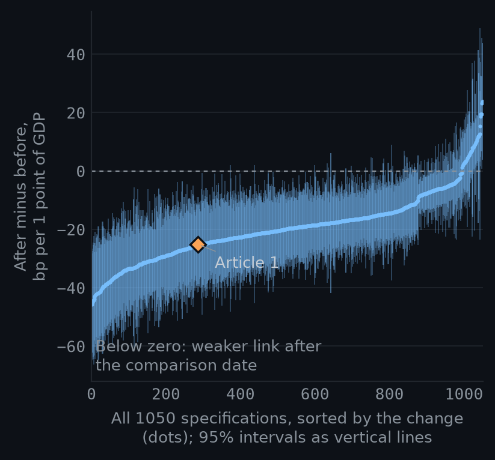
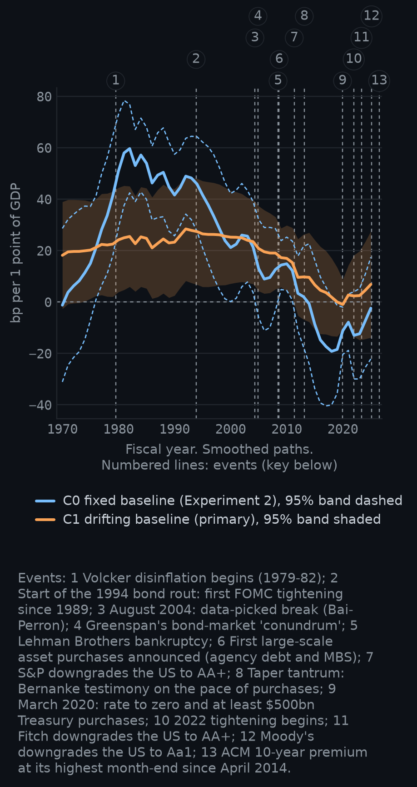
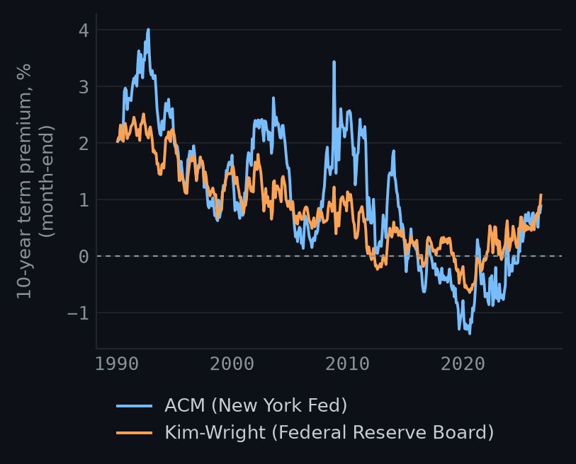

The Long End · Analysis · No. 1
The Return of the Bond Vigilantes: How Stable Is the Link Between US Deficits and the Term Premium?
- Published
- 20 October 2026; stress tests added 24 October 2026
- Observation period
- January 1980 to September 2025 (fiscal years 1981 to 2025); stress tests from fiscal 1967
- Data vintage
- New York Fed ACM files of 9 and 22 October 2026; Kim-Wright from FRED; other FRED and Treasury series. All revised data, not real-time
In the early 1980s the economist Ed Yardeni coined the term “bond vigilantes”: the market’s self-appointed enforcers of fiscal discipline, who punished governments for reckless borrowing by dumping their bonds and driving up what it cost them to borrow. From 1980 to 2007 the US data look as if they were on patrol. A wider deficit usually came with a noticeably higher 10-year term premium, about 30 basis points for every extra point of GDP. Since 2008 it has shrunk to 8 basis points or less, and in five of the six main versions the 95% range includes zero: the data can’t rule out no link at all.
At a glance
- ~30 bpBefore 2008, each extra point of GDP of deficit came with about 30 basis points more 10-year term premium, comparing years with the same debt-to-GDP ratio.
- 5 to 8 bpAfter 2008, in the four versions that use the deficit and debt alone. Add inflation and the output gap, or swap the New York Fed’s ACM premium for the Fed Board’s Kim-Wright estimate, and it falls to about zero (+0.9 and −1.2 bp).
- 83% of 1,050I re-ran the regression for every valid combination of eight choices, fixed before seeing any result: premium model, 5- or 10-year maturity, start year, fiscal timing, monthly or annual data, total or primary balance, controls and comparison date. In 83% of the 1,050 runs the link is lower after the comparison date and the drop is significant at the 5% level.
- No return yetTracked year by year, the 2025 estimate is −2.4 bp (range −22 to +17), under its post-2008 high of +9.3. The data don’t show the vigilantes coming back, but they can’t rule it out either.
What this shows: the link between US deficits and the term premium weakened clearly after 2008. What it doesn’t: why it weakened, or whether it is now coming back. It measures an association, not a cause, and January 2008 is a date I chose, not one the data picked. Why ask now: in 2026 the term premium climbed to its highest level in twelve years, which raised the question of whether the market is starting to charge for US fiscal risk again.
Numbers: article results, specifications table and the stress-test results.
01The Question and Why It Matters Now
For most governments the rule is simple. Borrow more, and investors ask to be paid more to lend to you for ten years: fiscal credibility gets priced. The United States is not most governments. It issues the world’s reserve currency and its safest asset, what France’s finance minister Valéry Giscard d’Estaing called an “exorbitant privilege”, and that lets it borrow on terms other countries can’t. So the question is whether the US bond market charges for fiscal risk at all, and when it stopped charging as much. If it charges, the term premium is one natural place to see it, though not the only one.
The question feels live. The US ran a deficit of about 5.8% of GDP in fiscal 2025, and in September 2026 the ACM estimate of the 10-year term premium closed the month at 0.89%, its highest month-end since April 2014. But a higher premium is a level. It does not tell you whether the premium has become more responsive to deficits. That is the question here: has the link between the fiscal balance and the term premium stayed stable over time?
02How I Looked at It
I compared the monthly 10-year term premium with the federal fiscal balance (as a share of GDP), holding the level of federal debt relative to GDP fixed. I let that relationship differ before and after January 2008. That is a comparison date I chose: the start of the year the financial crisis deepened and the Federal Reserve announced its first large-scale bond purchases (in November 2008). It is not a break the model found, and nearby dates from mid-2007 to 2010 give similar tests. Then I tested whether the fiscal link really changed, rather than just comparing two numbers by eye.
The fiscal balance is recorded with surpluses as positive numbers and deficits as negative ones, so "worse by one point" means a deficit one percentage point of GDP larger. I report everything in basis points of premium per point of GDP.
I checked the result five ways, because the first version had known weaknesses:
- Timing. The annual fiscal balance had been carried over the calendar year. Fiscal years run October to September, so I moved each year's figure to its own months.
- Repeated values. A yearly number copied across twelve months is not twelve observations. I re-ran the comparison with one row per fiscal year: 27 years before 2008 and 18 after.
- Uncertainty. The term premium moves slowly, so neighbouring months are not independent. I widened the window used to estimate uncertainty from 12 to 36 months.
- The business cycle. I added core inflation and the output gap, both allowed to matter differently after 2008.
- The model. I re-ran it with the Kim-Wright premium from 1990, on exactly the same months.
03What I Found

Across the six specifications displayed below, the earlier estimate is positive and its 95% confidence interval excludes zero. The later estimates are smaller, and their intervals include zero in five of the six specifications.
| Version | Before 2008 | 2008 onward | Change: p-value |
|---|---|---|---|
| Saved baseline: monthly, calendar-year timing | 29.5 (19.9 to 39.2) | 7.6 (0.2 to 14.9) | 0.0004 |
| Fiscal-year timing corrected, monthly | 30.3 (20.7 to 39.9) | 5.1 (-4.4 to 14.5) | 0.0002 |
| Same, 36-month uncertainty window | 30.3 (18.7 to 41.9) | 5.1 (-5.1 to 15.2) | 0.001 |
| One row per fiscal year | 30.2 (20.1 to 40.3) | 5.4 (-6.7 to 17.5) | 0.002 |
| Adding core inflation and the output gap | 25.9 (16.2 to 35.5) | 0.9 (-7.4 to 9.2) | 0.0001 |
| Kim-Wright premium instead of ACM (1990 onward) | 12.2 (3.2 to 21.3) | -1.2 (-5.1 to 2.7) | 0.008 |

Exhibit 4 shows the fiscal-year version directly: each point is one fiscal year. Before 2008 the points slope down from left to right, so wider deficits came with a higher premium. After 2008 the fitted line is close to flat, and the biggest deficit, fiscal 2020, sits below it.

04Stress Tests: Trying to Break the Result
A finding like this deserves a beating. So I tried to break it four ways, writing down the rules of every test before running it. The tests use a fresh pull of the data (22 October 2026) and start as early as fiscal 1967.
Test 1: every version at once
Any regression is a stack of choices: which estimate of the premium, which years, which controls, which comparison date. A sceptic can always ask whether I picked the one stack that tells a good story. So I listed every reasonable choice in advance and ran all of them: 1,050 versions of the original model.
In 83% of them, the link between deficits and the premium is significantly weaker after the comparison date. The typical version shows it falling by about 20 basis points per point of GDP. It is weakest when I control for inflation and the business cycle, and on the Kim-Wright estimate of the premium.

Test 2: the link, year by year
A before-and-after comparison hides the timing. So I let the link drift from year to year and asked one question fixed in advance: is it coming back? For the latest fiscal year, 2025, the estimate is −2.4 basis points, with a range of −22 to +17. To count as a return, the bottom of that range had to clear +9.3, the highest reading since 2008. It does not.
Two cautions. The bar is deliberately high, so this is no evidence of a return rather than proof of none. And the estimate uses only data up to each year but comes from today's revised figures, so it is a retrospective reading, not what an investor could have seen in real time.
Test 3: was it really inflation?
The early 1980s are where the link looks strongest, and they are also the years of double-digit inflation. Perhaps investors were simply charging for inflation risk, and deficits happened to be large at the same time. So I held inflation fixed.
It changed almost nothing. Inflation's own coefficient came out close to zero (−0.044, with a range of −0.170 to +0.082), and the 1982 link barely moved (+64 basis points against +60). Measured inflation does not explain it. That does not clear the deficit, though: if bigger deficits made investors fear inflation, holding inflation fixed would also hide part of the fiscal effect.
Test 4: the era problem
The real difficulty is credibility. In 1981 the Fed was fighting inflation, and inflation was falling: core prices rose 9.8% over the year to January 1981 and 6.5% over the year to June 1982. Yet the 10-year yield (as fitted by the New York Fed's ACM model) rose from 12.0% in January 1981 to 14.2% in October, and the term premium from 2.9% to 4.7%.
The market did not believe the Fed would see it through.
Marvin Goodfriend and Robert King make this the core of the Volcker story: the disinflation was costly because it was not believed, and Volcker's committee read long-term rates as a verdict on its own credibility. That makes the early 1980s a hard place to measure anything. The premium was high for reasons that had little to do with any single year's deficit, and a model with a fixed baseline can mistake that high-water mark for a strong deficit link. So the last test lets the premium's baseline move. The 1982 link drops from about +60 to about +25 basis points per point of GDP (range +6 to +45), still clearly positive.
But the answer depends on how fast that baseline may move. Let it move freely and the fade after 1982 vanishes: +0.3 basis points, with a range of −24 to +24. Make it move slowly and about half the fade remains. Allow it a single step in 2008 and all of it survives. The free version is the least trustworthy of the three: its baseline tracks the premium almost year by year (its year-to-year moves correlate 0.90 with the premium's), so it can swallow a genuine fiscal effect along with everything else.

How these were run: each test's choices and its rule for success were committed to the research repository before any estimate existed, and each was checked by an independent review. Results files: Test 1, Test 2, Test 3, Test 4.
05My Interpretation
The bond market did charge for US deficits before 2008, and it charges far less now. Those two claims survived everything: corrected fiscal-year timing, one observation per year, wider uncertainty bands, business-cycle controls and 1,050 versions of the model. The size of the change depends on how the premium is measured, but the direction does not.
What did not survive is a tidy story about when and how the change happened. The early 1980s, when the link looked strongest, were also when the Fed had the least credibility, and these data cannot pull the two apart. Before 2008 the link was somewhere between about 25 and 60 basis points per point of GDP, depending on modelling choices the data cannot settle. And I do not conclude that fiscal risk stopped mattering, or that any one institution caused the change.
06Competing Explanations
Timing. The largest deficits after 2008 arrived in recessions and crises, in 2009 and 2020, exactly when investors rushed into Treasuries and the Federal Reserve bought bonds at scale. Those forces push the premium down at the same moment deficits balloon. A weaker average link could therefore reflect when deficits happened rather than a change in how investors treat them. Adding the output gap only partly addresses this, because crises are more than a low output gap.
The premium's long fall. Credibility won back after Volcker, bonds becoming a safe hedge and a world awash in savings all pushed the premium down over four decades. They may have done most of the work, with deficits mattering less than the early numbers suggest. Test 4 leaves room for that.
07What the Evidence Cannot Establish
- Cause. These are associations in a premium that is itself a model estimate. They do not show that deficits raised the premium, or that anything specific weakened that effect.
- Timing. I chose January 2008. A search that lets the data pick breaks places one at August 2004 when only one is allowed, and August 2004 and January 2020 when two are; a criterion that picks the number of breaks chooses the maximum allowed (four). Whether the link faded gradually or broke around 2008 depends on modelling choices the data cannot settle.
- Precision. There are only 27 and 18 fiscal-year observations. A wide interval after 2008 means the data are inconclusive about the size of the later link, not that it is exactly zero.
- Who holds the debt. A popular explanation is that more Treasuries were held by price-inelastic buyers: foreign central banks in the 2000s and the Federal Reserve after 2008. Even the expected direction is not obvious, since in at least one recent framework a more price-inelastic holder base makes yields more responsive to supply. I have not tested this here (see Who Buys the Debt?).
- The present. The data are today's revised figures, and the latest fiscal year ends in September 2025, a year before the premium hit its highest month-end since April 2014.
08What Would Change My Mind
- If the later link reappeared once crisis years are handled explicitly, for example by excluding or modelling 2009 and 2020, the "weaker link" would look like a timing artefact.
- If fiscal news itself, such as debt-limit standoffs or rating downgrades, moved the premium as much after 2008 as before, the weaker annual link would say little about how markets treat fiscal risk.
- If the next fiscal years pushed the year-by-year estimate clearly above its post-2008 range, the vigilantes would be back in the data, not just in the headlines.
09Sources and Reproducibility
- Term premium: New York Fed, ACM term premia; Federal Reserve Board Kim-Wright estimate via FRED THREEFYTP10.
- Fiscal balance: FRED FYFSGDA188S (federal surplus or deficit, % of GDP, fiscal years).
- Debt and controls: FRED GFDEBTN (gross federal debt), nominal GDP, PCEPILFE (core PCE prices), GDPC1 and GDPPOT (output gap).
- Further reading: Goodfriend and King, "The Incredible Volcker Disinflation"; Laubach, "New Evidence on the Interest Rate Effects of Budget Deficits and Debt", who finds about 25 basis points on long-term rates per point of projected deficit, a related but different measure.
- Method: Adrian, Crump and Moench (2013), "Pricing the Term Structure with Linear Regressions," Journal of Financial Economics; Kim and Wright (2005), Federal Reserve FEDS 2005-33.
- Results: every number on this page comes from a generated results file, with chart data linked under each exhibit. The code is in a private research repository; the results files record the code version and data fingerprints.
Research and education only. Nothing here is investment advice.
Technical appendix
Model
Monthly, with separate intercepts and slopes after the comparison date:
TPt = a + b·FBt + c·Debtt + d·Postt + e·(Postt·FBt) + f·(Postt·Debtt) + ut
TP is the 10-year term premium (percent), FB the fiscal balance (% of GDP, surplus positive), Debt gross federal debt (FRED GFDEBTN, which includes debt held by government accounts) over annualized nominal GDP, and Post equals 1 from January 2008 (fiscal year 2008 for annual rows). The fiscal slope is b before and b + e after; the test of the change is the test of e = 0. Reported basis points are -100 times the slope. Because every coefficient can change, the period slopes equal those from two separate regressions; testing e inside one model uses a single covariance estimate.
The debt coefficient is about -5.3 to -5.5 in every version, before and after 2008 (debt_gdp_coef in the results file): each extra point of debt/GDP goes with roughly 5 basis points less premium. That sign is not a finding about debt. Debt rose while the premium trended down for decades, so the debt control mainly absorbs that long trend, and the fiscal slopes above are conditional on it.
Uncertainty
Monthly versions use Newey-West standard errors with 12 or 36 lags. Fiscal-year versions use heteroskedasticity-robust (HC1) errors; Newey-West with 2 lags gives p = 0.006 for the change. Intervals are 95%.
Sample
Monthly rows from January 1980, the first month with all inputs in the frozen data files (a start set by data coverage, now stated explicitly), to January 2025 with calendar-year timing and September 2025 with fiscal-year timing: 336 rows before 2008 and 205 or 213 after. Fiscal-year rows cover complete fiscal years 1981-2007 and 2008-2025. The stress tests use a fresh pull of the data and fiscal years back to 1967, with the July-June fiscal years before 1977 handled explicitly.
What changed from the saved baseline
The saved baseline's coefficients are reproduced exactly before anything else is run; its intervals here come from the pooled model and differ very slightly from the saved ones. The corrections are the fiscal-year timing, the fiscal-year rows, the joint test of the change and the added controls.
Two term premium models
On identical months from 1990, the ACM link is 30.6 basis points before 2008 and 5.1 after (change p = 0.0006); Kim-Wright gives 12.2 and -1.2 (p = 0.008). With one row per fiscal year, the Kim-Wright check is weaker: its earlier estimate's 95% interval (-1.1 to 22.3) includes zero, and the change has p = 0.07.

A data note
A monthly Treasury Statement measure of the deficit is also available from 1980, but its 12-month totals miss the annual series in fiscal years 1981-1984. Until late 1984 the monthly figures left out off-budget federal entities, mainly the Federal Financing Bank, which the 1985 budget law brought into the official totals. Adding the reported off-budget amounts closes the gap to under $0.1 billion a year. This article uses the annual series, which already includes them.